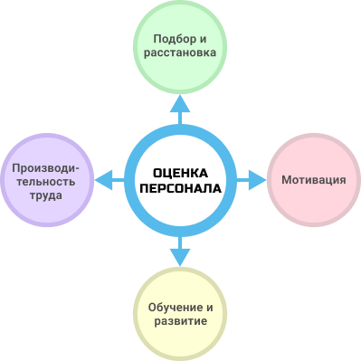
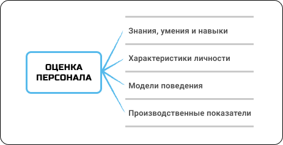

Оценка персонала - цели, задачи и методы

Оценка персонала - это процедура, направленная на определение текущей эффективности сотрудника (связанной с выполнением непосредственных обязанностей и достижением целей организации), его личностно-профессиональных особенностей и потенциала.
Эффективная система оценки предполагает наличие чётких целей и задач, а также измеримых критериев её результативности.
Система оценки персонала неразрывно связана с ключевыми бизнес-процессами организации:
-
Подбор и расстановка кадров
-
Управление производительностью труда
-
Мотивация персонала
-
Обучение и развитие сотрудников

Взаимосвязь оценки персонала с бизнес-процессами организации
Существует множество целей и сфер применения инструментов оценки в бизнесе. Например:
- отбор внешних и внутренних кандидатов на вакансии;
- определение результативности и компетентности сотрудников;
- выявление талантливых и высокопотенциальных сотрудников (HiPo);
- определение сильных сторон и областей дальнейшего развития сотрудника;
- выявление причин низкой эффективности персонала;
- отсев неблагонадежных кандидатов;
- основание для принятия кадровых решений;
- формирование кадрового резерва;
- определение уровня мотивации сотрудников;
- выявление причин текучести кадров;
- диагностика степени удовлетворенности персонала условиями труда /нововведениями;
- определение эффективности обучающих программ.
Таким образом, система оценки персонала позволяет решает руководству следующие задачи:
-
принятие взвешенных, основанных на данных, кадровых решений;
-
развитие и продвижение высокорезультативных и высокопотенциальных сотрудников;
-
разработка и реализация процедур, поддерживающих уровень лояльности и мотивации сотрудников;
-
создание эффективных программ обучения и развития персонала;
-
формирование индивидуальных планов развития сотрудников.
Важно помнить, что оценка персонала всегда производится по определенным критериям, в качестве которых могут выступать профессиональные или менеджерские компетенции, ключевые показатели эффективности (KPI), различные шкалы и индикаторы.
При этом оценочные критерии зачастую предполагают наличие целевого уровня («идеального профиля»), с которым сравниваются полученные результаты и на основании которого формируются выводы об эффективности и потенциале сотрудника.
В качестве объектов оценки сотрудников обычно выступают четыре категории:
-
Знания, умения и навыки работника
-
Модели поведения
-
Психологические характеристики личности
-
Производственные показатели сотрудника

Объекты оценки персонала
Для каждой из перечисленных категорий существуют специальные методы оценки. В современной HR-практике применяются следующие методы:
-
индивидуальный ассесмент (глубинное интервью);
-
измерение результативности сотрудников (performance appraisal);
-
интервью по компетенциям (поведенческие/бихевиоральное интервью);
Вместе с тем, качество и объективность полученной в ходе оценки инфрмации зависит не только от выбранного инструментария, но и от профессионализма эксперта, который его применяет. Недостаточно просто знать описание того или иного метода оценки, важно уметь им граммотно пользоваться, понимать особенности и области применения, владеть навыками обработки и интерпретации результатов.
Автор материала: Беспалов Игорь Александрович ©
Заботясь о сохранении и развитии кадрового потенциала своей компании, доверяйте работу профессионалам!
Воспользуйтесь нашими обучающими материалами, чтобы провести качественную оценку сотрудников. Мы всегда рады помочь нашим клиентам и покупателям при возникновении вопросов. В течение 6 месяцев после приобретения наших материалов консультации предоставляются бесплатно.
Вы можете заказать услугу по оценке кандидатов и сотрудников в вашей организации или самостоятельно освоить полезные оценочные технологии, используя наши обучающие материалы:


наверх
наверх ▲